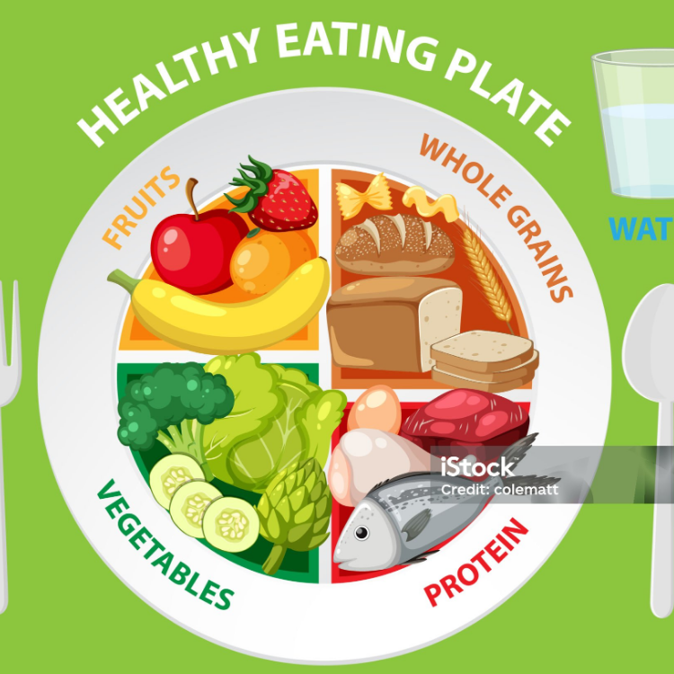

Having a healthy diet for a healthy life
Why have a healthy diet?
Having a healthy diet is not just to look good but also about feeling your best, having a good food balance will make your body energized, getting all the vitamins, minerals and healthy fats to your body.
This will help you feel good, also preventing chronic diseases and, having a lower risk of developing many serious conditions such as some types of diabetes and certain types of cancer.
Also your immunity system will thank you in the future, since consuming a variety of vitamins strengthens the immunity system, making your body fight infections and illnesses faster.
Enhanced Mental Health
Having a diet that includes complex carbohydrates will provide a steady release of glucose that helps your body maintain stable energy levels and prevents some mood swings.
Tryptophan is an amino acid that is found in dairy, it helps to produce serotonin, which will make you happier and more relaxed than before.
One of the biggest problems of those years is the quality of sleep, having a diet that is rich in magnesium such as almonds, spinach and dark chocolate will promote better relaxation and better sleep overall.
Stronger Bones and Muscles
Calcium is the main mineral that is found in the bones, it is essential for your bone structure and strength. Consuming foods like milk, yogurt and cheese will help to prevent conditions like osteoporosis.
It is impossible to talk about muscles and not talk about protein, it is essential for the repair and growth of your muscles. The best sources of protein are chicken, turkey, fish, eggs and so on.
Having potassium in your diet will support muscle contractions and helps prevent muscle cramps. It also aids in maintaining fluid balance in the body, you can find potassium in foods like bananas, sweet potatoes and avocados
Longevity and Quality of Life
As talked about before having a healthy diet will help you prevent cancer, certain foods, such as those rich in antioxidants like berries, leafy greens, and nuts, can help fight free radicals and reduce oxidative stress, which has been linked to cancer development.
A healthy diet that includes heart-healthy fats (like omega-3 fatty acids), fruits, vegetables, and whole grains can lower the risk of cardiovascular diseases by maintaining healthy cholesterol levels, blood pressure, and reducing inflammation.
Eating nutrient-dense foods that are high in fibre, protein, and healthy fats helps regulate hunger and maintain a healthy weight. This can reduce the risk of obesity-related conditions like heart disease, diabetes, and joint issues.
Boosts Cognitive Function
Polyphenols are plant compounds found in fruits, vegetables, nuts, seeds, and beverages like tea and coffee. They have anti-inflammatory properties and are known to protect the brain against damage, improving memory, learning, and cognitive function.
Proper hydration is crucial for brain function. Dehydration can cause mental fatigue, difficulty concentrating, and memory lapses.
Magnesium plays a key role in the transmission of nerve signals and the regulation of the brain's electrical activity. It also helps maintain healthy levels of the stress hormone cortisol, preventing it from negatively impacting cognitive function.